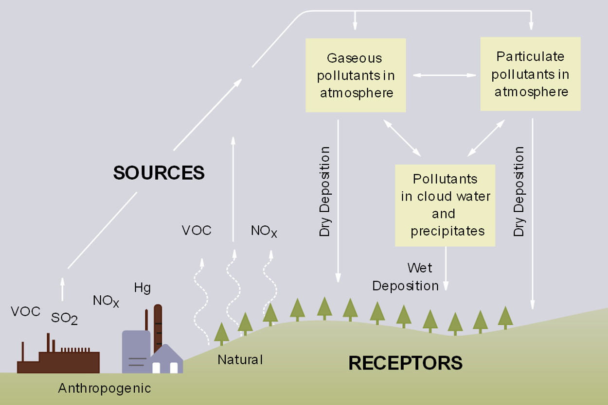

Otto and Anna have been pen-friends several years. Anna lives in Sweden and Otto in Estonia. Estonia is known for its limestone banks. Also, national Estonian stone is limestone. During her summer vacation Anna was visiting Otto in Estonia. Buddies decided to go trout fishing to a lake near the home village. On their way to the lake, Anna told Otto that there were some lakes in Sweden with transparent pure water and beautiful granite stones on bottom, but no fish - that was due to acid rain. Anna was curious if there was no acid rain in Estonia. Otto said that they did have acid rain in Estonia, like in other countries. Anna was really surprised. How was this possible? Shouldn’t the acidic precipitation inhibit the fish spawning? Kevin started thinking about it. Indeed, how could trout survive despite of acid rain?
Figure 1. Origins of acid rain. (This is a file from Wikimedia Commons.) This work is in the public domain in the United States because it is a work of the United States Federal Government.